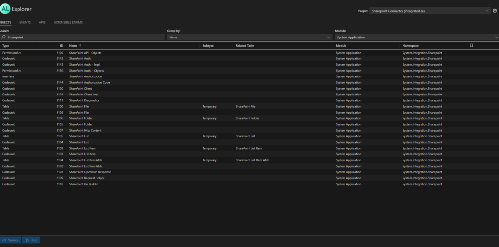
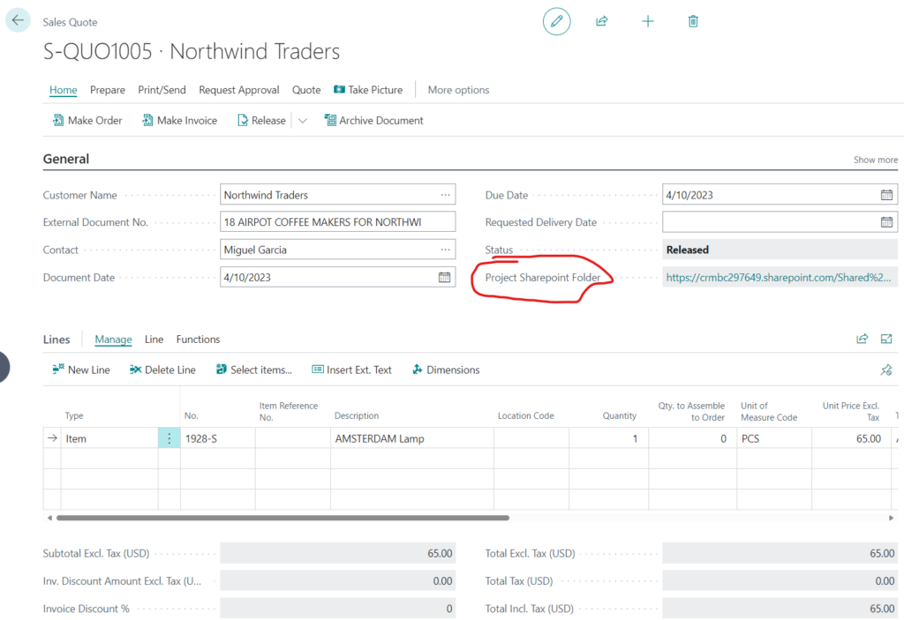
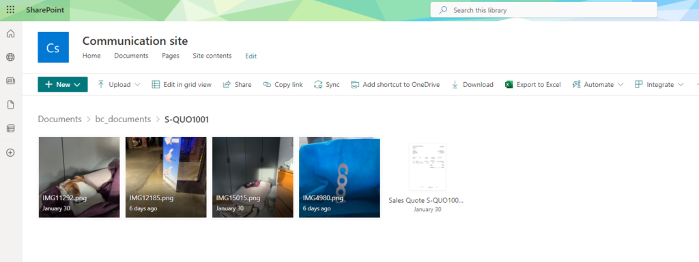

Since the storage is pretty expensive in Business Central and you only get 80GB for all your Dev, Test and Live environments it doesn’t make much sense to store large files in Business Central.
Lets say we have a business requirement that every time we create a sales quote we need to take a picture with a mobile phone and save that picture somewhere where its related to the Sales Quote in Business Central.
Luckily its pretty easy to do with Business Central since most of the code is available from the System App to communicate with the Sharepoint Online and we as a Business Central Developer just need to put all those puzzle pieces together.
If you search for Sharepoint you will find many objects related to Sharepoint:

There is also quite nice blog that explains how to get Sharepoint working in AL: https://simplanova.com/blog/utilizing-the-system-applications-sharepoint-connector-module-to-manage-files-in-business-central/
Only thing that didn’t work for me very well from that blog was the scope.
I had to use /AllSites.FullControl scope for my Sharepoint site to get this fully functional.
When the base for Sharepoint connection is set up then you need two procedures to create folder and create files in Sharepoint.
procedure UploadFileToSharepointFolder(FolderName: Text; FileName: Text; FileInstream: InStream): Boolean
var
Diagnostics: Interface"HTTP Diagnostics";
ConnectionError: Label 'Error with sharepoint connection - %1';
SharepointSetup: Record"SHP Sharepoint Connector Setup";
SharepointFolder: Record"SharePoint Folder" temporary;
SharepointFile: Record"SharePoint File" temporary;
RelativeUrl: text;
RootUrl: text;
begin
InitializeConnection();
SharepointSetup.SetLoadFields("CRM Documents Root Folder Name");
if SharepointSetup.Get() then begin
SharepointSetup.TestField("CRM Documents Root Folder Name");
RelativeUrl := '/' + 'Shared Documents' + '/' + SharepointSetup."CRM Documents Root Folder Name" + '/' + FolderName;
if SharepointClient.AddFileToFolder(RelativeUrl, FileName, FileInstream, SharepointFile) then begin
exit(true);
end;
Diagnostics := SharepointClient.GetDiagnostics();
if (not Diagnostics.IsSuccessStatusCode()) then
Error(ConnectionError, Diagnostics.GetErrorMessage() + ' | ' + Diagnostics.GetResponseReasonPhrase());
end;
end;
procedure CreateFolder(FolderName: Text): Boolean
var
Diagnostics: Interface"HTTP Diagnostics";
ConnectionError: Label 'Error with sharepoint connection - %1';
SharepointSetup: Record"SHP Sharepoint Connector Setup";
SharepointFolder: Record"SharePoint Folder" temporary;
SharepointFile: Record"SharePoint File" temporary;
RelativeUrl: text;
RootUrl: text;
begin
InitializeConnection();
SharepointSetup.SetLoadFields("CRM Documents Root Folder Name");
if SharepointSetup.Get() then begin
SharepointSetup.TestField("CRM Documents Root Folder Name");
RelativeUrl := '/' + 'Shared Documents' + '/' + SharepointSetup."CRM Documents Root Folder Name" + '/' + FolderName;
if SharepointClient.CreateFolder(RelativeUrl, SharepointFolder) then begin
exit(true);
end;
Diagnostics := SharepointClient.GetDiagnostics();
if (not Diagnostics.IsSuccessStatusCode()) then
Error(ConnectionError, Diagnostics.GetErrorMessage() + ' | ' + Diagnostics.GetResponseReasonPhrase());
end;
end;After these procedure I could create a action that opens camera on the device and I can take pictures.
pageextension 75560"POS Sales Quote" extends"Sales Quote"
{
layout
{
// Add changes to page layout here
}
actions
{
addlast(Promoted)
{
actionref(TakePicture;"POS TakePicture")
{
}
}
addlast("&Quote")
{
action("POS TakePicture")
{
Caption = 'Take Picture';
ApplicationArea = All;
Visible = true;
Image = Camera;
trigger OnAction()
var
CameraInteraction: Page Camera;
PictureStream: InStream;
EncodingType: Enum"Image Encoding";
TembBlob: Codeunit"Temp Blob";
Base64Convert: Codeunit"Base64 Convert";
Base64Picture: Text;
SharepointConnector: Codeunit"SHP Sharepoint Integration";
begin
if CameraInteraction.IsAvailable() then begin
CameraInteraction.SetAllowEdit(true);
CameraInteraction.SetQuality(50);
CameraInteraction.SetEncodingType(EncodingType::PNG);
CameraInteraction.RunModal();
CameraInteraction.GetPicture(TembBlob);
TembBlob.CreateInStream(PictureStream);
if SharepointConnector.CreateFolder(Rec."No.") then
if SharepointConnector.UploadFileToSharepointFolder(Rec."No.", 'IMG' + Format(Random(20000)) + '.png', PictureStream) then
Message('Picture Uploaded');
end else
Message('Camera is not available on this device.');
end;
}
}
}
}Then I can take a picture from the Sales Quote and that picture will be saved to the Sharepoint and a link is attached to a Quote in Business Central:

And in Sharepoint I have all my dog pictures related to the Sales Quote in Business Central : )
